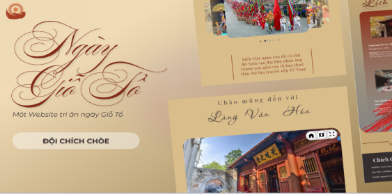

Ngày Giỗ Tổ
Preserving Vietnamese cultural heritage through digital innovation — built for the Webdev Adventure : Web Software Development Competition.
Overview
Built for the Webdev Adventure competition hosted by UIT – VNU HCMC, with a 4-person team over 8 weeks. Role: UX/UI Designer & Front-end Developer, covering research, IA, visual design and a responsive, WCAG 2.1-conscious build.
Problem & Solution
Hùng Kings' Commemoration Day lacks a cohesive digital presence — information is scattered and outdated. The site consolidates history, festival activities and community contributions into one platform that stays culturally authentic while feeling modern.
Key Features
- Cultural Visual Identity: warm earth tones and decorative patterns inspired by ancient temples.
- Interactive Timeline: a scroll-based narrative through the history of the Hùng Kings.
- Community Engagement: a donation system with QR support and a live "Top Donors" leaderboard.
- Accessibility First: WCAG 2.1 AA-compliant contrast, semantics and keyboard navigation.
Learnings
Balancing modern design trends with cultural authenticity took constant validation. Next steps: multilingual support and a 360° virtual tour of the Hùng Kings Temple.